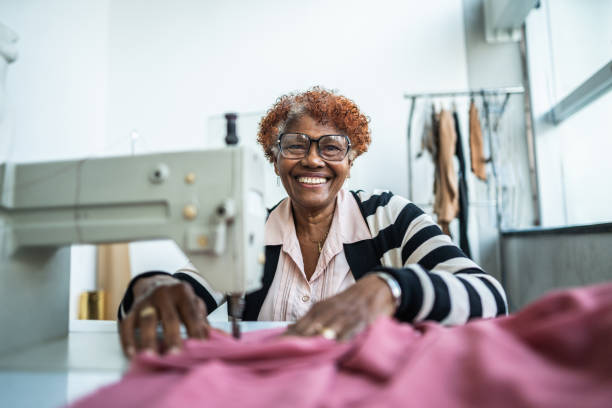
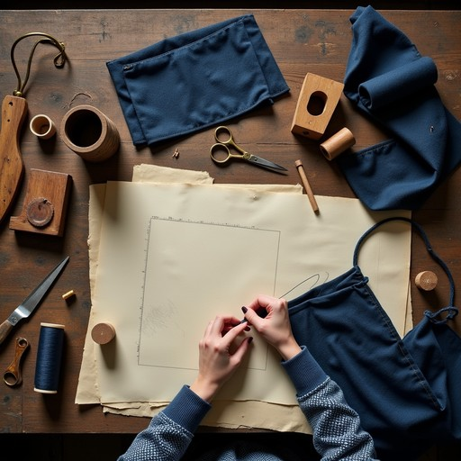

01
Clothing Repairs
We repair damaged clothing such as loose seams, small tears and other everyday clothing damage.
Repair • Restyle • Rewear
REPAIR • LEARN • CREATE
At Second Spin Sewing Studio, we believe that clothes deserve more than one chance.
Our sewing services help repair and improve garments, while our workshops teach useful sewing and upcycling skills.
Make an Enquiry
WHAT WE OFFER
Our services focus on extending the life of clothing instead of throwing garments away.
We repair damaged clothing such as loose seams, small tears and other everyday clothing damage.
Clothing can be adjusted to improve its fit and allow garments to continue being worn comfortably.
We transform old or unwanted clothing into something fresh, useful and creative.

LEARN WITH US
Our workshops introduce community members to practical sewing skills that they can continue using at home.
Participants learn how to repair clothing, use basic sewing techniques and find creative ways to reuse garments.
SUSTAINABLE FASHION
Repairing and reusing clothing can extend the life of garments and reduce unnecessary clothing waste.
Give damaged or unwanted garments another opportunity to be worn.
Reusing clothing helps prevent usable garments from being discarded unnecessarily.
Sewing skills make it easier to repair and reuse clothing in the future.
Send us an enquiry and let us know how Second Spin Sewing Studio can help you.
Contact Second Spin